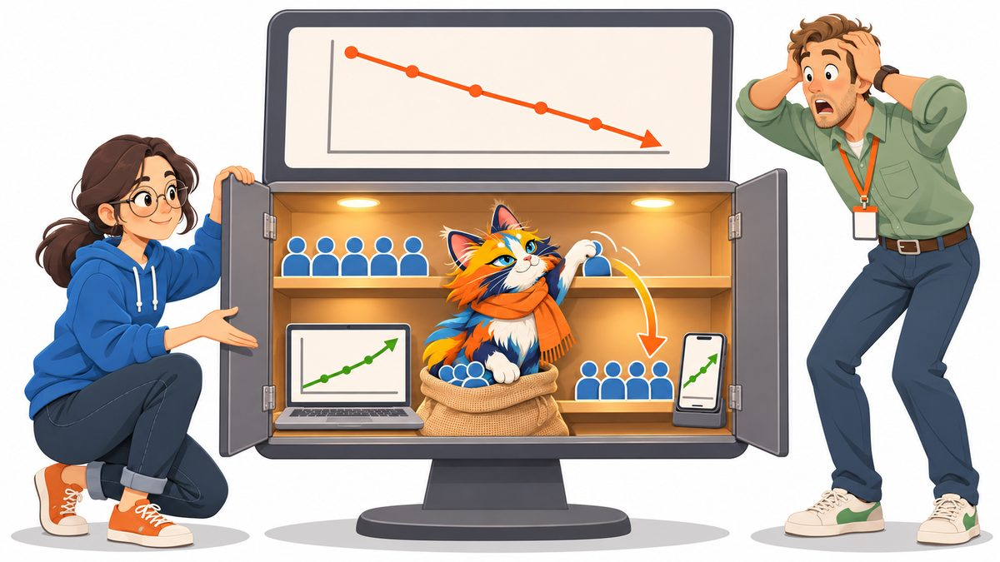
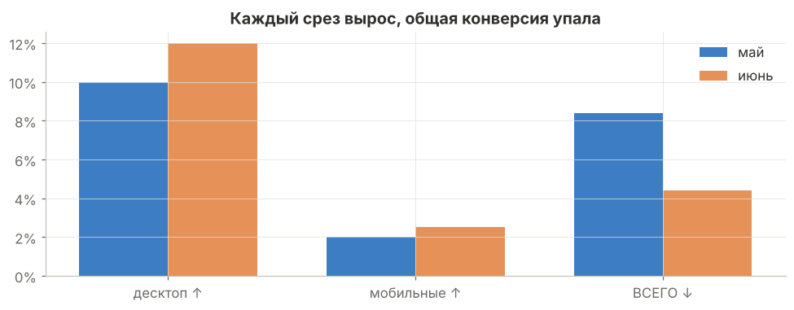
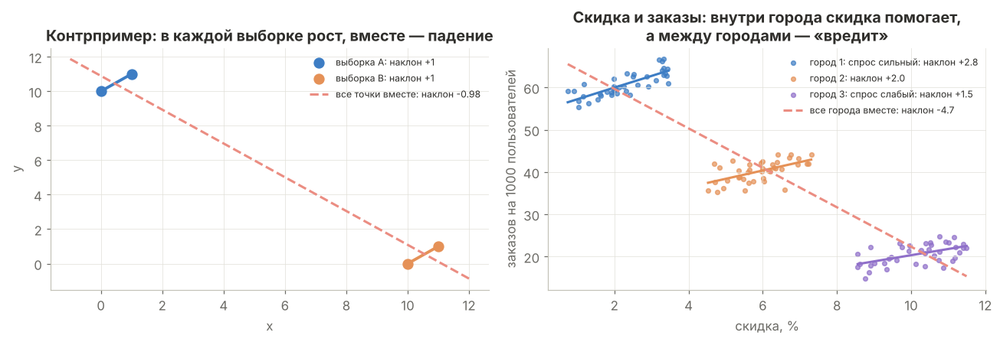

Занятие 3 · блок 2
Парадокс Симпсона


Общая конверсия упала. Посмотрели отдельно десктоп и мобильные — в обоих выросла. Данные сломаны?
Общая метрика складывается из сегментов. Самый знаменитый пример: метрика растёт в каждом сегменте и падает в целом. Это не баг данных — это арифметика весов.
Задача 5. Конверсия падает, а в срезах растёт
График общей конверсии идёт вниз. Посмотрели отдельно на десктоп и на мобильные — в обоих случаях конверсия растёт. Может ли так быть и при каких условиях? Нарисуй табличку с двумя месяцами, где это видно, и объясни механизм.
| Десктоп: сессии / покупки | Мобильные: сессии / покупки | Всего | |
|---|---|---|---|
| Май | 800 / 80 = 10% | 200 / 4 = 2% | 1 000 / 84 = 8.4% |
| Июнь | 200 / 24 = 12% | 800 / 20 = 2.5% | 1 000 / 44 = 4.4% |
Решение
Шаг 1. Конверсии сегментов. Десктоп 10% → 12%, мобильные 2% → 2.5% — оба растут.
Шаг 2. Веса — доли сессий. Май: десктоп 0.8, мобильные 0.2. Июнь: десктоп 0.2, мобильные 0.8. Трафик развернулся.
Шаг 3. Общая — взвешенное среднее. Май: . Июнь: . Падение на 4%.

Да, может — если трафик переезжает в слабый сегмент. Пользователи стали чаще заходить с телефона, а с телефона покупают в 4–5 раз реже. Поведение в каждой платформе улучшилось, но переезд перевесил. На собеседовании: назвать явление — парадокс Симпсона, — объяснить механизм через веса, привести пример.
Общая метрика — взвешенное среднее сегментов
Для каждого сегмента : — доля сегмента в трафике, — конверсия сегмента. Покупки сегмента — сессии × конверсия, поэтому общая конверсия
Общая конверсия меняется по двум причинам: поменялись конверсии сегментов — эффект поведения, или поменялись доли сегментов — эффект состава. Парадокс Симпсона — когда эффект состава сильнее и направлен в другую сторону.
- Точное разложение. С долями и конверсиями, усреднёнными за два периода, и :
Средние берут, чтобы разложение было точным и не зависело от того, какой период назвать базовым.
- Наш пример. Состав: десктоп , мобильные , итого −5.25%. Поведение: . Сумма: .
- Когда Симпсон невозможен. Если доли сегментов не изменились, эффект состава равен нулю, и общая метрика движется туда же, куда сегменты. В A/B-тесте с честной рандомизацией доли сегментов в группах одинаковы, поэтому между группами Симпсона нет. Он возвращается, когда долю трафика меняют на ходу или когда сегменты определяют после воздействия.
Вопрос залу. Боб спрашивает: «Так конверсия упала или выросла?» Что ему ответить? Какое число показать на дашборде?
Ответ
Обе цифры правдивы, но отвечают на разные вопросы. Поведение пользователей в каждой платформе стало лучше, +1.25%. Бизнес получает меньше покупок, потому что трафик ушёл в мобильные, −5.25%. На дашборд — общую конверсию и разложение. «Стал ли сайт хуже?» — нет; «что делать с мобильными?» — их конверсия в 4 раза ниже, это главный рычаг.
Симпсон в A/B-тесте: трафик меняли на ходу
Эксперимент запустили в понедельник 50/50, а во вторник перевели в тест 90% трафика. По будням конверсия ниже.
| День | Контроль: сессий / конверсия | Тест: сессий / конверсия |
|---|---|---|
| Понедельник | 500 / 10% | 500 / 11% |
| Вторник | 100 / 5% | 900 / 5.5% |
В каждый день тест лучше на 10%. А «за весь тест»: контроль , тест — тест «хуже». У теста в 9 раз больше «плохого» вторника.
Долю трафика в эксперименте не меняют, а если поменяли — сравнивают внутри периодов с одинаковым разбиением.
Парадокс Симпсона в других сферах
В каждом срезе выигрывает одна сторона, а в сумме — другая, потому что стороны по-разному распределены по срезам.
- Камни в почках (British Medical Journal, 1986). Открытая операция лучше и на мелких камнях, 93% против 87%, и на крупных, 73% против 69%, а в сумме проигрывает: 78% против 83%. Открытую чаще делали на крупных камнях, где успех ниже у любого метода. Сравнение «в сумме» сравнивает не методы, а сложность пациентов.
- Приём в Беркли, 1973. В сумме мужчин принимали в полтора раза чаще, 45% против 30%. Но по факультетам женщин принимали не реже — в четырёх из шести даже чаще. Женщины в основном подавались на конкурсные факультеты, где отказывают почти всем.
- Бейсбол. Джастис отбивал лучше Джитера и в 1995, и в 1996 году, а за два года — хуже: 27.0% против 31.0%. У Джитера почти все попытки пришлись на удачный 1996-й, у Джастиса — на слабый 1995-й.
Дополнительная задача — если останется время
Задача 6. Симпсон в регрессии
Есть две выборки пар — A и B. В каждой построили регрессию , и в обеих наклон положительный. Верно ли, что в объединённой выборке наклон тоже положительный?
Решение
Шаг 1. Контрпример. A = {(0, 10), (1, 11)}, наклон +1. B = {(10, 0), (11, 1)}, наклон +1. Центры групп: (0.5, 10.5) и (10.5, 0.5) — между ними падает.
Шаг 2. Наклон объединения. Средние 5.5 и 5.5; произведения отклонений все по −24.75, сумма −99; сумма квадратов отклонений — 101. .

Неверно: связь «между группами» сильнее, чем «внутри». Пример: внутри каждого города скидка увеличивает заказы, но скидки дают там, где спрос слабый, — по всем городам вместе «скидки вредят». Лечение — сравнивать внутри города.
Дополнительная задача — если останется время
Задача 7. Доля по браузерам и средний чек по полу
- Может ли доля поисковика расти в каждом браузере, но падать в сумме?
- Средний чек такси у мужчин и женщин различается. Значит ли это, что они по-разному платят за одну и ту же поездку?
Решение
Пункт 1. Браузер A: 80% → 82%, B: 20% → 22%. Трафик A 50% → 20%, B 50% → 80%. Общая доля: → .
Пункт 2. Чек — среднее по поездкам, а поездки у групп разные: длина, тариф, час пик, детское кресло, город. Честно сравнивать внутри одинаковых поездок или регрессией чека на пол с этими признаками.
1) Да — если трафик переезжает в браузер, где поисковик слаб. 2) Не значит: скорее всего, разный состав поездок, а не разная цена одной и той же поездки.
Дополнительная задача — если останется время
Задача 8. Ценность подписки растёт
Метрика «ценность подписки для пользователя» — среднее по базе подписчиков. За полгода: 140, 142, 144, 142, 147, 148. 1) Какие выводы можно сделать? 2) Разбили базу на новичков (1–3 месяца) и старичков (3+). В обоих кластерах метрика снижается. Может ли так быть?
Решение
Пункт 1. Без шума и сезонности рост не отличить от колебаний, и не видно, из чего он: поведение или состав базы.
Пункт 2. Новички 100 → 98, старички 160 → 158 — оба падают. Лояльное ядро копится: доля старичков 60% → 80%. Общая: → . Поведение −2, состав +12.
Да, может: общий рост — это рост доли старичков, а внутри обоих кластеров ценность падает — плохая новость, замаскированная хорошей. Смотреть по когортам и раскладывать на состав и поведение.
Отвечай разложением
Общая метрика — взвешенное среднее сегментов. Её изменение = эффект поведения внутри сегментов + эффект состава. Парадокс Симпсона — состав перевешивает. На вопрос «упало или выросло?» отвечай разложением, а не одной цифрой.